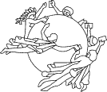

Illegal Stamp Issues
from Democratic Republic of the Congo
|
 |
UNIVERSAL POSTAL UNION |
Berne, November 10, 1997 International Bureau Circular |
418 |
The Philatelic Webmasters Organization collaborates with the UPU and the postal administrations in their fight against the illegal issues. For this reason we publish below the UPU Circular No. 418.
Dear Sir/Madam
The administration of the DEMOCRATIC REPUBLIC OF THE CONGO asks me to inform you of the following:
We are writing to inform the postal administrations of UPU member countries that we have many cuttings from philatelic magazines referring to the issue by the Democratic Republic of the Congo (the former Zaire) of a certain number of philatelic products still printed with the country's old name (Zaire). These Issues were certainly put into circulation by the firm IMPRESSOR S.A.
The Democratic Republic of the Congo wishes to advise that the above-mentioned issues are fraudulent and are therefore not admitted for philatelic sale by its postal Services.
They are as follows:
- France Philatelic
- Chinese Procession
- John Lennon
- Cats
- Dogs
- Elvis Presley
- Music Entertainers: Freddy Mercury, Frank Sinatra, John Lennon, Sammy Davis
Jr., David Bowie, Nat King Cole, Madonna, Tins Turner, Elvis Presley.
For 1997, only the issues entitled flore, minéraux (flora, minerals) and Jamborée, circulation of which was approved by ministerial decree, are recognized as valid.
Yours faithfully,
M S RAMAN
Assistant Director-General
More information about the illegal issues can be obtained directly from the UPU, Mrs. Maria Libera.
| Published:
05/18/2001. Revised: 08/17/02. Copyright © 2001 - 2002 by PWO and by Victor Manta, Switzerland. All rights reserved worldwide. |